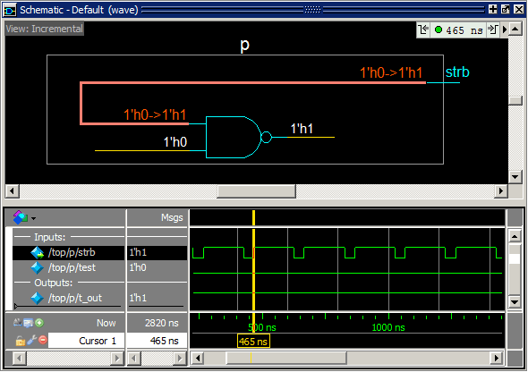
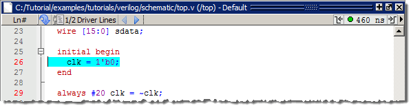
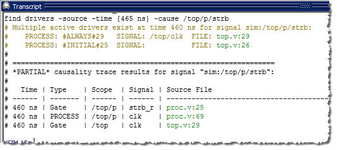
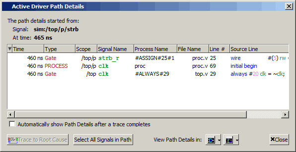
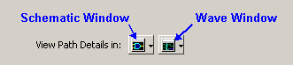
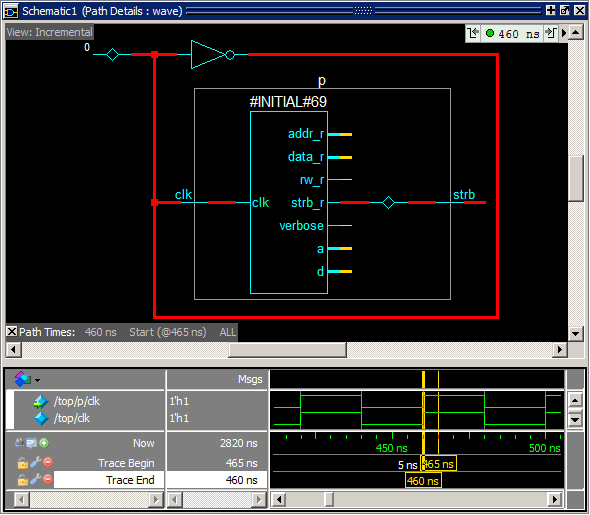

Now we will
trace an event.
Procedure
- Add an object
to the schematic window.
- Make sure
instance p is selected in the Structure (sim)
window.
- Drag signal t_out from
the Objects window to the schematic window.
- Open the
Schematic window’s Wave viewer.
- Click the
Show Wave button in the toolbar.
- Show signals
for a process in the Schematic window’s Wave viewer.
- Select the NAND gate
in the schematic. This loads the wave signals for the inputs and
outputs for this gate into the Wave viewer.
- Place a
cursor in the Wave viewer to designate the Current Time.
- Locate the
cursor and drag it to the transition at 465 ns on the strb waveform
in the Wave viewer.
- Select the strb signal
pathname in the Wave viewer. This highlights the strb signal net
in the schematic (Figure 1).
Figure 1. The Embedded Wave
Viewer
Notice that
the Current Time label in the upper right corner of the schematic
displays the time of the selected cursor, 465 ns.
- Trace to
the cause of the event.
- Right-click
the highlighted signal in the schematic to open the popup menu.
- Select .
This will open a Source window where the immediate driving process
will be highlighted (Figure 2).
Figure 2. Immediate Driving
Process in the Source Window
In addition,
the Transcript window displays the result of the trace as shown
in Figure 3.
Figure 3. Result of Trace in
Transcript
- To see path
details, open the Active Driver Path Details window by clicking
and holding the Event Traceback toolbar button until the popup menu
appears, then selecting View Path Details.
The Active
Driver Path Details window (Figure 4) displays information about the sequential
process(es) that caused the selected event. It shows the selected
signal name, the time of each process in the causality path to the
first sequential process, and details about the location of the
causal process in the code.
Figure 4. Active Driver Path
Details Window
- View path
details for strb_r from the #ASSIGN#25#1 process
in the Schematic window.
- Click the
top line in the Active Driver Path Details window to select the strb_r signal driver.
- Click the Schematic
Window button in the View Path Details section of the
Active Driver Path Details dialog box (Figure 5).
Figure 5. Schematic Window Button
This will
open a dedicated Schematic (Path Details) window that displays the
path details for the selected driver of the signal (Figure 6).
Figure 6. Schematic Path Details
Window
The Wave
viewer section of the dedicated Schematic (Path Details) window
displays a Trace Begin and a Trace End cursor.
Experiment
with tracing other events and viewing path details in the dedicated Schematic
and Wave windows.
- Clear the
Schematic window before continuing.
- Close the
Active Driver Path Details window.
- Close the
Schematic (Path Details) window.
- Select the
original Schematic window by clicking the Schematic tab.
- Use the Delete
Content button to clear the Schematic Viewer.
- Click the Show
Wave icon to close the Wave view of the schematic window.